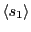

Next: Elements of a Continuous-Space
Up: Case Study 1: The
Previous: A C Code for
- Run the code for the following values of temperature: 5.0, 4.0, 3.0,
2.0, 1.0. Run the code several times at each
 with a different
value for the random number generator seed. Report the average spin
and average energy per spin. What is happening near ?
with a different
value for the random number generator seed. Report the average spin
and average energy per spin. What is happening near ?
- Modify the code so that when samples are
taken in accumulating statistics for
 and
 , the current sample values are output to the
terminal. You'll want to find the right place to add the following
line: fprintf(stdout,"%i %.5lf %.5lfn",c,s,e);
, the current sample values are output to the
terminal. You'll want to find the right place to add the following
line: fprintf(stdout,"%i %.5lf %.5lfn",c,s,e);
- The current version of the code initializes the Ising lattice with
random spins. What temperature does this correspond to? Modify the
code so that the initial lattice has two well-defined domains, all
spin-up for and all spin-down for . Re-run at
the various temperatures. Do you see any differences?
- (Advanced) Modify the code ising.c to compute the quantity
as a function
of various distances between spins
 and
and  .
.
cfa22@drexel.edu